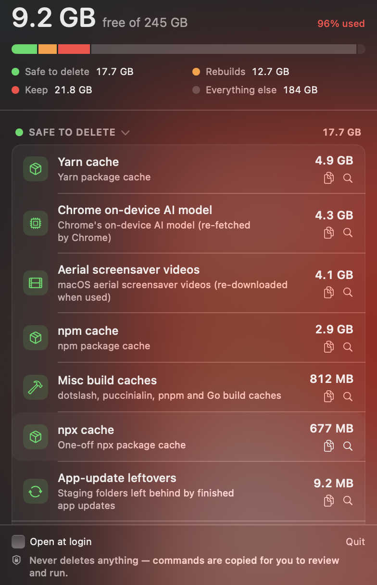

Find the gigabytes your Mac quietly hoards.
A tiny menu-bar app that scans the caches, package stores and VM images macOS hides in ~/Library — sorts them into safe, rebuilds and keep — and hands you the exact command to clean each one. It never deletes anything itself.

Scans where the bloat hides
npm, Yarn and uv caches, Playwright browsers, app-update leftovers, aerial videos, Docker VMs — measured in about four seconds.
Tells you what’s safe
Every folder is marked safe to delete, safe but rebuilds, or keep. Your data — browser profiles, flashcards, live containers — is never suggested.
You stay in control
The app only reads sizes. It copies the cleanup command; you read it and run it in Terminal. No network access, no telemetry.
Install in five steps
About two minutes. Step 3 is the one people get stuck on — the app isn’t notarized by Apple, so macOS asks you to confirm once.
-
01
Download the app
Click Download for Mac. A file called StorageAnalysis.dmg lands in your Downloads folder. It works on both Apple silicon and Intel Macs running macOS 14 Sonoma or later.
-
02
Drag it into Applications
Double-click the .dmg. In the window that opens, drag StorageAnalysis onto the Applications folder, then eject the disk image.
-
03
Allow it to open — once
The step everyone asks aboutOpen the app from Applications. macOS says it “could not verify” it — that’s because it isn’t notarized, not because something is wrong. Click Done, then open System Settings → Privacy & Security, scroll down, click Open Anyway and confirm with your password.
Prefer Terminal? This does the same thing:xattr -dr com.apple.quarantine /Applications/StorageAnalysis.app -
04
Find it in the menu bar
There’s no window or Dock icon. Look top-right for a drive symbol next to your free space — it turns into a warning triangle above 90% full. Click it; the first scan takes about five seconds.
-
05
Clean up, on your terms
Click the copy icon on any green or orange row, paste into Terminal, read it, press Return. Quit the app that owns a folder first (e.g. Chrome before its AI model). Then hit rescan to see the space come back.
On the Mac it was built on, it found 17.7 GB safe to delete.
Free, open source, and under 1 MB. Read every line of it on GitHub.